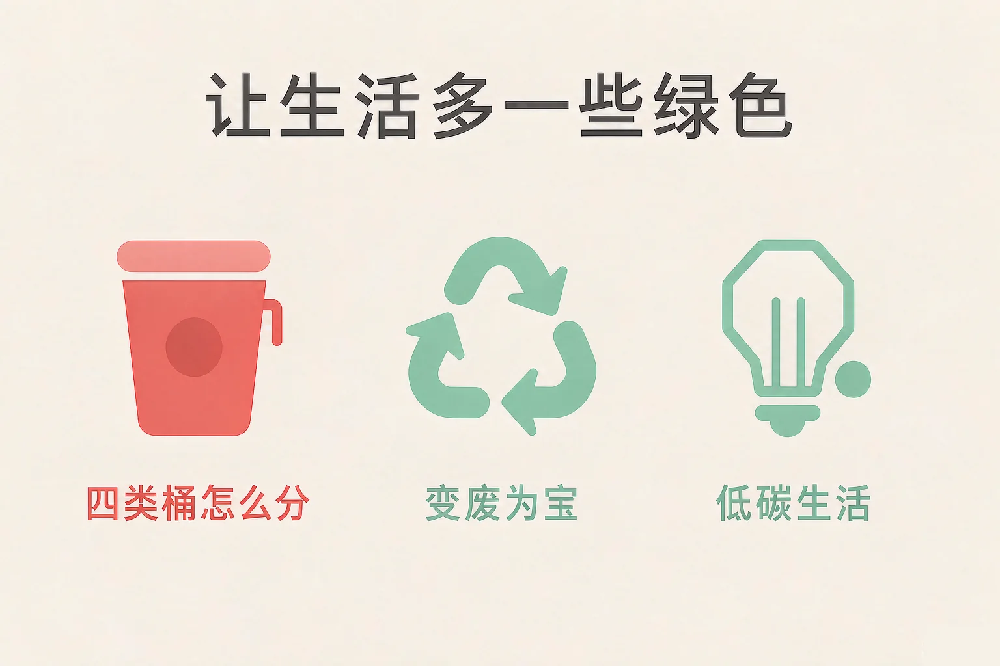
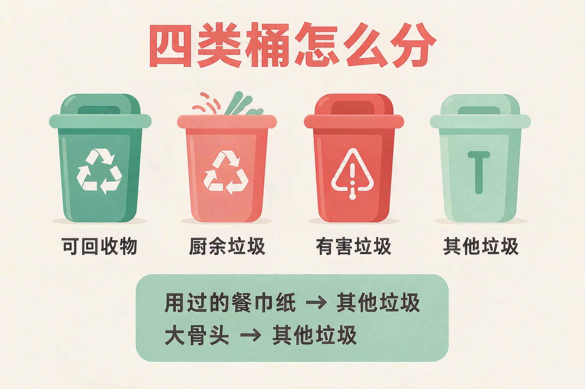
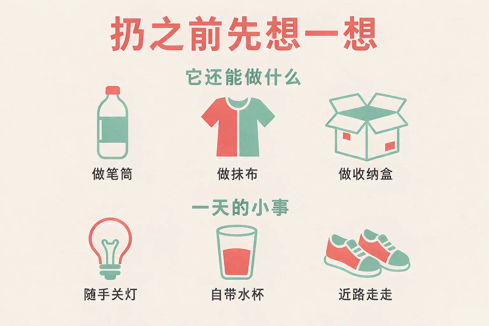

Gallery
v1.0.0 · skill v7.22.0
小学四年级 · 法治启蒙
一件用完的东西，怎样才能让它再有用一次？

选一个你真正想知道的问题，后面的活动都会围着它转。
选择或输入后，这节课会围绕你的问题展开。
先凭直觉选一个，选完立刻看到解释——错了也没关系，正好知道要重点听哪里。
1. 用过的餐巾纸，应该投进哪一个桶？
餐巾纸沾了水和油，脏了的纸不能再回收，所以属于其他垃圾。错因提醒：常见错误是误认为「纸都可以回收」——能不能回收，看的是干净还是脏了。
2. 下面哪一件是随手就能做到的省电小事？
随手关灯不用准备什么工具，也不用多花时间，是门槛最低的一件小事。错因提醒：有的同学把「一会儿还要回来」搞混成「不用关」——走出去就关，回来再开，一共只有两下。
3. 关于少用一次性餐具，下面哪种说法说得对？
垃圾是一点一点多起来的，也可以一点一点少下去；一个班一起做，就是一大步。错因提醒：容易把「一个人做不了什么」误认为「做了也没用」——教室里四十个人一起做，一学期就是很多件。
为什么要学这一课？
我们每天都在扔垃圾，也大概知道要分类（And）；可真正站在桶前面的时候，用过的餐巾纸、大骨头这些就拿不准了（But）；所以这节课先把四类桶分清楚，再站到投放台前一件一件投对（Therefore）。
垃圾分类是指按照一定的标准，把垃圾分成几类，分别投放到不同的桶里。分好以后，能再利用的就不会被埋在土里。
可回收物
干净的纸、塑料瓶、易拉罐、旧衣服、纸箱。它们还能变成新东西。
厨余垃圾
剩饭剩菜、果皮、菜叶、茶叶渣。厨房里来的，容易腐坏，专门处理。
有害垃圾
废电池、过期药品、坏掉的荧光灯管。里面有需要专门处理的部分。
其他垃圾
用过的餐巾纸、大骨头、摔碎的陶瓷碗。既不能再回收，也不好当厨余。

两个最容易投错的例子
用过的餐巾纸属于其他垃圾——脏了的纸不能再回收，投进可回收物会把一整袋干净的东西弄脏。大骨头也属于其他垃圾——太硬，处理设备会被卡住；小骨头和鱼刺才是厨余垃圾。
有的同学误认为「只要带个纸字就是可回收物」。其实关键是干净还是脏了：干净能回收，脏了就归其他。拿不准的时候，看一看桶边贴的提示。
🔍 深层理解 换个角度再看一遍这件事，看看能不能说出背后的原理。
看见它：同样是一张纸，干净的纸盒是资源，沾了油的餐巾纸是其他垃圾。差别不在材料，在它现在的样子。
解释它：为什么要分得这么细？因为混在一起，能用的和需要专门处理的都会互相拖累——分开以后，才各归各位。
迁移它：这套判断在家里、在学校、在小区都用得上：先看干净不干净，再看是哪里来的，最后看有没有需要专门处理的东西。
你现在是分类投放员。先点一件垃圾，再点一个桶；也可以直接把垃圾拖进桶里。拿不准的那两件，投完记得读一读为什么。
先点一件垃圾。
分完垃圾，还有一件更早可以做的事：扔之前先想一想，它还能做什么。
变废为宝有妙招
塑料瓶剪开做笔筒；旧衣服剪成抹布；纸箱折成收纳盒；玻璃罐装豆子；旧报纸擦玻璃。
低碳生活每一天
随手关灯；洗菜水浇花；少用一次性餐具；自带水杯和购物袋；近的地方走路或者骑车。

为什么这些小事值得做
一件看起来很小，可是一个班四十个人一起做，就是一大步。垃圾是一点一点多起来的，也可以一点一点少下去。
有的同学误认为只有做大事才算为环境出力，自己少用一双一次性筷子没什么用。先把一件小事做到底，比喊十句口号都管用。
🔍 深层理解 换个角度再看一遍这件事，看看能不能说出背后的原理。
看见它：同一个空瓶子，扔进可回收桶是一次回收，做成笔筒是又一次使用——它被用了几次，取决于我先想了哪一步。
比较它：同样是喝水：买一瓶瓶装水，是喝一次、多一个瓶子；带自己的水杯，是喝很多次、不多一个瓶子。
迁移它：这套办法在家里和在学校都一样：先问还能不能用，再问该投哪个桶，最后才说扔。
给自己做一份计划：在下面三个场景里，勾出你愿意做、也做得到的小事，然后点一下按钮生成计划。
在家里
在学校
出门时
先勾一勾，再点生成。
情境：早上小禾喝完一瓶牛奶、用纸巾擦了擦嘴；中午妈妈要把一个空玻璃罐扔掉；晚上他回房间写作业。这一天里，藏着好几件和绿色有关的小事。
第五步：把小事变成习惯
晚上离开房间把灯关了；写作业时，草稿用的是上学期没用完的本子背面。这一天没发生什么大事，可家里的垃圾少了一点，能再用起来的东西多了一点。
有的同学误认为「纸就是可回收物，看到纸就往可回收桶里放」。可关键是干净还是脏了——干净能回收，脏了就归其他。
先凭直觉选一个，选完立刻看到解释——错了也没关系，正好知道要重点听哪里。
1. 关于垃圾分类，下面哪句话说得对？
能不能回收，看的是干净还是脏了；分开以后，能用的和需要专门处理的才各归各位。错因提醒：常见错误是误认为「纸都可以回收」——一张沾了油的餐巾纸混进可回收物，会把一整袋都弄脏。
2. 大骨头应该投进哪一个桶？
大骨头太硬，厨余垃圾的处理设备容易被卡住，所以它属于其他垃圾；小骨头和鱼刺才是厨余垃圾。错因提醒：有的同学把「带骨头就是厨房里的东西」搞混成「都算厨余垃圾」——硬不硬，也是判断的一条。
3. 喝完的塑料瓶，下面哪种做法更好？
干净、压扁再投，回收起来更方便；还能用的话，先用一次再回收。错因提醒：容易把「它是塑料就能回收」误认为「不用洗也能投」——没倒干净的瓶子会把整袋可回收物弄脏。
先在左边点一件废旧物品，再在右边点它的第二种用法。两边对上了，就会记进下面的清单里。
先在左边点一件废旧物品。
配完之后，想一想：
家里有什么东西，你原来打算扔掉，现在想留下来再用一次？写下来。
先凭直觉选一个，选完立刻看到解释——错了也没关系，正好知道要重点听哪里。
1. 一块废电池（纽扣电池）应该投进哪一个桶？
电池里有需要专门处理的部分，投进有害垃圾，别随手扔进普通垃圾桶。错因提醒：常见错误是误认为「小东西无所谓，扔进哪个桶都行」——越是有需要专门处理的部分，越不能混进去。
2. 穿不下的旧衣服，下面哪种做法更好？
先想它还能做什么，再决定扔不扔；旧衣服干净还能穿的话，可以送出去继续用。错因提醒：容易把「我不穿了」误认为「它没用了」——对我没用的东西，可能对别人还有用。
3. 和妈妈一起去超市买东西，下面哪种做法更好？
带一个购物袋、少一层包装，都是出门前就能准备好的小事。错因提醒：有的同学把「单独看这一件没什么」搞混成「做了也没用」——一周买三次，一个学期就是很多个袋子。
一句口诀：干净能回收，脏了归其他；电池药灯管，专门一类放。扔之前先想一想，它还能做什么。
给别人讲一遍：请用「四类桶」「干净能回收」这两个说法，给家里人讲一件今天投对过的垃圾。
再动一动手：写一写你打算从今天起先做的那一件小事，写清楚做什么、什么时候做、请谁帮你记着。
三层练习，做完第一、二层就算通关；第三层留给愿意继续探索的同学。
⭐ 基础巩固（必做）
⭐⭐ 能力应用（必做）
⭐⭐⭐ 迁移挑战（选做）
左边是学它之前要先会的，右边是学会之后可以继续探索的，下面是同一领域的伙伴知识。
图谱正在加载：首次进入需下载知识索引（约 1–3 秒），加载完成后本行会自动消失。